Créditos de las fotos
Cada foto de aquí es obra de alguien y se comparte con una licencia que nos permite usarla. Cada una aparece con quién la tomó, la licencia y un enlace al original.
Cada foto se muestra con otro tamaño; las copias pequeñas se recortan a un cuadrado o a una tarjeta ancha.
Plantas · 129
129 fotos, una por cada planta que tiene. La página de cada planta muestra su foto con este mismo crédito.

Plantas de maíz creciendo en un campo, con las espigas arriba
Foto: Rasbak at Dutch Wikipedia · CC BY-SA 3.0, vía Wikimedia Commons.

Una planta de frijol con vainas verdes colgando entre las hojas
Foto: Rainer Zenz (uploader), via Wikimedia Commons · CC BY-SA 3.0, vía Wikimedia Commons.


Una planta de frijol de carita con sus vainas largas
Foto: Yercaud-elango · CC BY-SA 4.0, vía Wikimedia Commons.
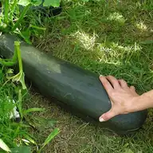
Una calabacita verde creciendo en el suelo entre las hojas
Foto: Lmbuga · CC BY-SA 3.0, vía Wikimedia Commons.

Calabaza butternut, entera y partida por la mitad
Foto: George Chernilevsky · Dominio público, vía Wikimedia Commons.


Una planta de chile con frutos rojos y anaranjados
Foto: PierreSelim · CC BY 3.0, vía Wikimedia Commons.

Una planta de tomatillo con frutos en su cáscara
Foto: Frank Vincentz · CC BY-SA 3.0, vía Wikimedia Commons.

Una planta de papa en flor, con flores moradas
Foto: George Chernilevsky · Dominio público, vía Wikimedia Commons.

Berenjenas moradas madurando en la planta
Foto: Joydeep · CC BY-SA 3.0, vía Wikimedia Commons.

Zanahorias de muchos colores dispuestas en abanico
Foto: Stephen Ausmus · Dominio público, vía Wikimedia Commons.
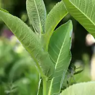
Hojas largas y rizadas de rábano picante
Foto: W. Bulach · CC BY-SA 4.0, vía Wikimedia Commons.

Una cabeza de repollo verde con las hojas bien apretadas
Foto: George Chernilevsky · Dominio público, vía Wikimedia Commons.

Una lechuga de hoja suelta creciendo en la tierra del huerto
Foto: DeFacto · CC BY-SA 4.0, vía Wikimedia Commons.

Plantas de arúgula creciendo como verdura de hoja para ensalada
Foto: Leo Michels · Dominio público, vía Wikimedia Commons.

Una planta frondosa de mostaza
Foto: Krish Dulal · CC BY-SA 3.0, vía Wikimedia Commons.

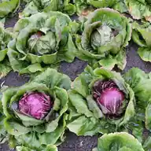
Cabezas de achicoria roja creciendo en un bancal, con el corazón rojo entre hojas exteriores verdes
Foto: Goldlocki · CC BY-SA 3.0, vía Wikimedia Commons.

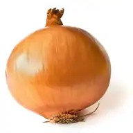
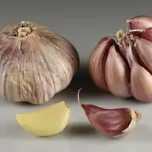
Una cabeza de ajo con algunos dientes separados
Foto: Ivar Leidus · CC BY-SA 4.0, vía Wikimedia Commons.
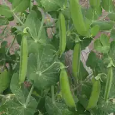
Una planta de arveja con vainas verdes en la guía
Foto: Rasbak · CC BY-SA 3.0, vía Wikimedia Commons.

Una planta de haba en flor
Foto: Krzysztof Ziarnek, Kenraiz · CC BY-SA 4.0, vía Wikimedia Commons.

Una planta de garbanzo cubierta de pequeñas vainas verdes
Foto: Nundhaa · CC BY-SA 4.0, vía Wikimedia Commons.
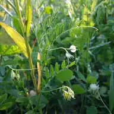
Una planta de lenteja en flor, con vainas pequeñas y planas entre folíolos finos
Foto: Stefan.lefnaer · CC BY-SA 4.0, vía Wikimedia Commons.


Una planta joven de ajedrea, con hojas estrechas en verticilos brillantes
Foto: Victor M. Vicente Selvas · Dominio público, vía Wikimedia Commons.

Una planta de albahaca dulce con hojas verdes y anchas
Foto: PumpkinSky · CC BY-SA 4.0, vía Wikimedia Commons.
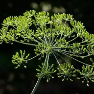

Una planta de amaranto con un penacho de flores rojo oscuro
Foto: SAplants · CC BY-SA 4.0, vía Wikimedia Commons.
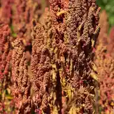
Panojas rojas de quínoa madurando en un campo
Foto: Bob Ramsak · CC BY-SA 4.0, vía Wikimedia Commons.

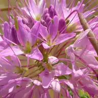
La flor rosada y en forma de araña de la cleome de las Montañas Rocosas
Foto: Matt Lavin from Bozeman, Montana, USA · CC BY-SA 2.0, vía Wikimedia Commons.

Plantas de trigo sarraceno en flor, con racimos de pequeñas flores blancas
Foto: Afanasovich · CC BY-SA 4.0, vía Wikimedia Commons.
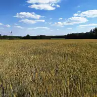
Un campo de centeno madurando bajo un cielo azul con nubes blancas
Foto: Radosław Botev · CC BY-SA 4.0, vía Wikimedia Commons.
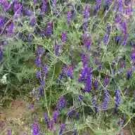
Vicia vellosa en flor, con flores moradas a lo largo de tallos rastreros
Foto: Agnieszka Kwiecień · CC BY-SA 4.0, vía Wikimedia Commons.

Plantas de avena en un campo, con espigas sueltas colgando entre las hojas
Foto: Sendelbach · CC BY-SA 3.0, vía Wikimedia Commons.


Flores anaranjadas de caléndula en plantas frondosas, en un arriate
Foto: Flominator · CC BY-SA 3.0, vía Wikimedia Commons.

Racimos de pequeñas flores blancas de alyssum
Foto: Robert Flogaus-Faust · CC BY 4.0, vía Wikimedia Commons.

Una flor de clavel de moro
Foto: George Chernilevsky · Dominio público, vía Wikimedia Commons.
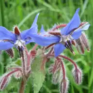
Flores azules de borraja en forma de estrella
Foto: AnRo0002 · CC0 1.0, vía Wikimedia Commons.

Plantas de mastuerzo con hojas redondas y flores anaranjadas
Foto: AnRo0002 · CC0 1.0, vía Wikimedia Commons.


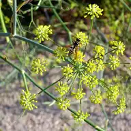
Una planta de hinojo con umbelas de flores amarillas
Foto: Javier martin · Dominio público, vía Wikimedia Commons.
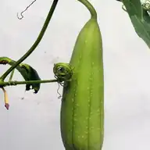

Un fruto de luffa largo y verde colgando de su enredadera entre hojas lobuladas
Foto: Forest and Kim Starr · CC BY 3.0 us, vía Wikimedia Commons.

Betabeles rojos recién cosechados, con sus raíces y sus hojas
Foto: Frank Schulenburg · CC0, vía Wikimedia Commons.

Una planta de espinaca con hojas verdes y anchas
Foto: Rasbak · CC BY-SA 3.0, vía Wikimedia Commons.

Hojas redondeadas y lustrosas de espinaca de Malabar
Foto: Joydeep · CC BY-SA 3.0, vía Wikimedia Commons.

Espinaca de Nueva Zelanda, un tapiz de hojas gruesas y triangulares
Foto: Harry Rose · CC BY 2.0, vía Wikimedia Commons.
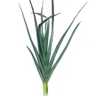
Un solo poro con el tallo blanco y las hojas verdes
Foto: Amada44 · CC BY-SA 4.0, vía Wikimedia Commons.

Rábanos rojos creciendo en la tierra con sus hojas
Foto: Schlaghecken Josef · CC BY-SA 4.0, vía Wikimedia Commons.

Melones cantalupo, enteros y cortados en rebanadas
Foto: USDA photo by Scott Bauer. Image Number K7355-11. · Dominio público, vía Wikimedia Commons.

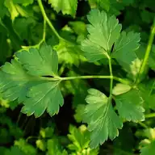

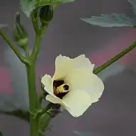
Una planta de okra con una flor de color crema
Foto: ADARSHluck · CC BY-SA 4.0, vía Wikimedia Commons.
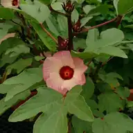
Una planta de flor de Jamaica con una flor rosa pálido y tallos rojos
Foto: Mokkie · CC BY-SA 3.0, vía Wikimedia Commons.

Un montón de calabazas de invierno
Foto: George Chernilevsky · Dominio público, vía Wikimedia Commons.


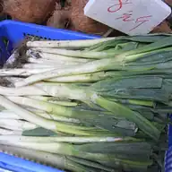
Manojos de cebollitas de cambray con tallos blancos y puntas verdes
Foto: Genmewcaugsa · CC BY-SA 3.0, vía Wikimedia Commons.
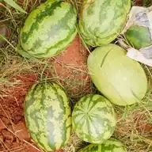

Una sola manzana roja madura
Foto: Abhijit Tembhekar from Mumbai, India · CC BY 2.0, vía Wikimedia Commons.


Un membrillo joven, pálido y velloso, en la rama
Foto: Topi Pigula · CC BY-SA 4.0, vía Wikimedia Commons.

Ciruelas moradas madurando en la rama
Foto: Jonathan Billinger · CC BY-SA 2.0, vía Wikimedia Commons.
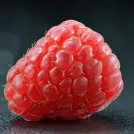


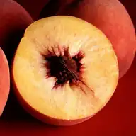
Un durazno, entero y partido por la mitad para mostrar el hueso
Foto: Jack Dykinga, USDA · Dominio público, vía Wikimedia Commons.


Cerezas de color rojo oscuro colgando en racimos entre las hojas de un cerezo
Foto: MPF · CC BY 2.5, vía Wikimedia Commons.

Una rama de albaricoquero cargada de frutos anaranjados contra un cielo azul
Foto: Zeynel Cebeci · CC BY-SA 4.0, vía Wikimedia Commons.

Un grupo de plantas de consuelda rusa
Foto: Evelyn Simak · CC BY-SA 2.0, vía Wikimedia Commons.

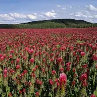
Un campo de trébol encarnado en flor
Foto: Nefronus · CC BY-SA 4.0, vía Wikimedia Commons.
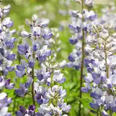
Altramuz silvestre con espigas de flores azules
Foto: cassi saari · CC BY-SA 4.0, vía Wikimedia Commons.

Un arbusto de índigo falso con una espiga de flores moradas
Foto: Dalgial · CC BY-SA 3.0, vía Wikimedia Commons.

Bayas rojas y moteadas de olivo de otoño en la rama
Foto: Alpsdake · CC BY-SA 4.0, vía Wikimedia Commons.

Un ramillete de flores blancas de milenrama
Foto: Petar Milošević · CC BY-SA 4.0, vía Wikimedia Commons.

Un campo de equináceas, con los pétalos rosados caídos bajo conos elevados
Foto: Burkhard Mücke · CC BY-SA 4.0, vía Wikimedia Commons.
Una flor de crocus abierta, con rayas moradas y blancas y el centro anaranjado
Foto: Ermell · CC BY-SA 4.0, vía Wikimedia Commons.

Una planta de orégano con flores rosadas
Foto: Ivar Leidus · CC BY-SA 4.0, vía Wikimedia Commons.

Una planta de mejorana en flor, con pequeñas flores blancas en tallos erguidos
Foto: Forest & Kim Starr · CC BY 3.0, vía Wikimedia Commons.
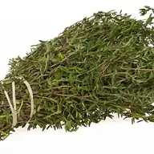

Una planta de romero con hojas como agujas y flores azules
Foto: THOR · CC BY 2.0, vía Wikimedia Commons.

Lavanda en flor, con espigas moradas sobre hojas verde grisáceas
Foto: Kolforn · CC BY-SA 4.0, vía Wikimedia Commons.


Una planta de estragón con hojas verdes y delgadas
Foto: Agnieszka Kwiecień · CC BY-SA 4.0, vía Wikimedia Commons.

Las hojas verdes y frondosas de una planta de hierbabuena
Foto: Commonists · CC BY-SA 4.0, vía Wikimedia Commons.
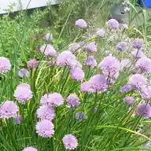

Una planta de toronjil con florecitas blancas
Foto: Gideon Pisanty ( Gidip ) גדעון פיזנטי · CC BY 3.0, vía Wikimedia Commons.

Flores blancas de manzanilla romana con el centro amarillo, entre hojas finas
Foto: Petruss · CC BY-SA 3.0, vía Wikimedia Commons.
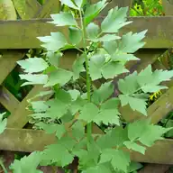
Hojas de levístico, lustrosas y muy recortadas, delante de una cerca de madera
Foto: 4028mdk09 · CC BY-SA 3.0, vía Wikimedia Commons.

Arándanos azules madurando en el arbusto
Foto: Darkone ( talk · contribs ) · CC BY-SA 2.5, vía Wikimedia Commons.
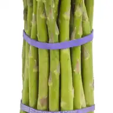
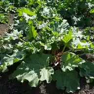
Una planta de ruibarbo con hojas grandes y tallos rojos
Foto: DeFacto · CC BY-SA 4.0, vía Wikimedia Commons.
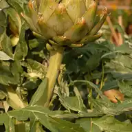
Una cabeza de alcachofa en su tallo sobre hojas de color verde grisáceo
Foto: Derek Ramsey (Ram-Man), with the Chanticleer Garden · CC BY-SA 3.0, vía Wikimedia Commons.

Hojas de acedera, verdes y con forma de escudo
Foto: Jerzy Opioła · CC BY-SA 4.0, vía Wikimedia Commons.

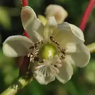
Una flor de kiwi arguta, de color blanco crema, en su enredadera
Foto: Schurdl · CC BY-SA 4.0, vía Wikimedia Commons.

Un racimo colgante de bayas de saúco de color morado oscuro entre hojas verdes
Foto: Rison Thumboor · CC BY-SA 4.0, vía Wikimedia Commons.

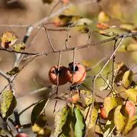
Caquis anaranjados en una rama desnuda entre hojas amarillas de otoño
Foto: Ryan Watson · CC BY 4.0, vía Wikimedia Commons.

Moras maduras y a medio madurar, negras, rojas y rosadas, en una rama con hojas
Foto: Famartin · CC BY-SA 4.0, vía Wikimedia Commons.

Bayas azules y alargadas de haskap colgando a lo largo de una rama con hojas
Foto: Oleg Kosterin · CC BY 4.0, vía Wikimedia Commons.

Un racimo de bayas negras de aronia sobre hojas verdes y brillantes
Foto: Michel Langeveld · CC BY-SA 4.0, vía Wikimedia Commons.

Espigas moradas de hisopo de anís sobre hojas dentadas, con un abejorro en una
Foto: Guettarda · CC BY-SA 4.0, vía Wikimedia Commons.

Un higo partido por la mitad que muestra su interior rojo
Foto: Ivar Leidus · CC BY-SA 4.0, vía Wikimedia Commons.
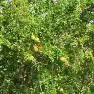
Un granado con frutos jóvenes entre hojas verdes y pequeñas
Foto: Juan Emilio Prades Bel · CC BY-SA 4.0, vía Wikimedia Commons.
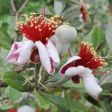
Flores de guayabo del país con pétalos blancos y estambres de un rojo vivo
Foto: Sergei Kazantsev · CC BY-SA 4.0, vía Wikimedia Commons.
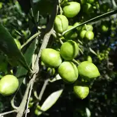
Aceitunas verdes madurando en una rama entre hojas estrechas
Foto: Forest and Kim Starr · CC BY 3.0 us, vía Wikimedia Commons.
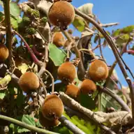
Kiwis pardos y vellosos colgando de una enredadera contra un cielo azul
Foto: Mike Finn · CC BY 2.0, vía Wikimedia Commons.
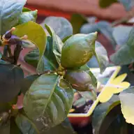
Limones verdes, aún sin madurar, en un limonero entre hojas brillantes
Foto: Commonists · CC BY-SA 4.0, vía Wikimedia Commons.
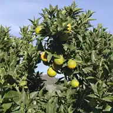
Naranjas madurando en lo alto de un naranjo contra un cielo azul
Foto: Luis Fernández García · CC BY-SA 2.5 es, vía Wikimedia Commons.

Un mandarino con frutos anaranjados entre hojas de color verde oscuro
Foto: Agnieszka Kwiecień, Nova · CC BY-SA 4.0, vía Wikimedia Commons.

Una lima verde colgando entre hojas brillantes
Foto: Forest and Kim Starr · CC BY 3.0 us, vía Wikimedia Commons.
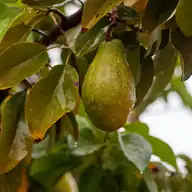
Una palta verde colgando de su árbol entre hojas grandes
Foto: Treysam · CC BY-SA 4.0, vía Wikimedia Commons.

Un árbol de mango cargado de frutos verdes y jóvenes
Foto: Veronidae · CC BY-SA 3.0, vía Wikimedia Commons.
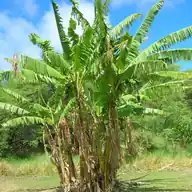
Un grupo de plantas de banana de hojas anchas bajo un cielo azul
Foto: Forest & Kim Starr · CC BY 3.0, vía Wikimedia Commons.

Una flor de maracuyá con una corona de filamentos morados y blancos en su enredadera
Foto: Heydew · CC BY-SA 4.0, vía Wikimedia Commons.


.jpg){kind=link}
,_Trimingham,_Norfolk.JPG){kind=link}


.JPG){kind=link}

.jpg){kind=link}


.jpg){kind=link}


_01.jpg){kind=link}


.jpg){kind=link}


.jpg){kind=link}

.jpg){kind=link}


_Feb_2019._DSC_0060_01.jpg){kind=link}
_2.jpg){kind=link}


.jpg){kind=link}


_-_plod.jpg){kind=link}

.jpg){kind=link}
.jpg){kind=link}
_single2.jpg){kind=link}


_in_flower_-_geograph.org.uk_-_6477153.jpg){kind=link}


.jpg){kind=link}
.jpg){kind=link}


,_Trimingham,_Norfolk.JPG){kind=link}


.jpg){kind=link}
.jpg){kind=link}


.jpg){kind=link}


1.jpg){kind=link}


_fruit_halved.jpg){kind=link}


.jpg){kind=link}
.jpg){kind=link}


.jpg){kind=link}


Huertos y tareas del huerto · 88
88 fotos de huertos, tareas del huerto y plantas en acción: las que abren páginas, acompañan a las guías, dan a la página de una planta una segunda mirada y muestran un equipo de plantas creciendo.

Un huerto de hileras largas sembradas en campo abierto, visto a través de las camas
Foto: Mary O'Neill · Dominio público, vía Wikimedia Commons.

Una cosecha de huerto de finales del verano sobre una mesa redonda de madera: calabacitas, tomates maduros, pimientos pálidos, remolachas con sus hojas, hierbas y cabezas de girasol cortadas junto a una canasta blanca de mimbre
Foto: SA, The Green Ark- Bostanie · CC BY 4.0, vía Wikimedia Commons.

Camas cuadradas de hortalizas bajo jaulas bajas de protección en un huerto amurallado, con una torre de agua victoriana de ladrillo que se alza detrás del muro
Foto: Acabashi · CC BY-SA 4.0, vía Wikimedia Commons.

Una tomatera con estaca en una cama del huerto, con racimos de frutas pequeñas que maduran de verde a naranja y a rojo entre las hojas, y el suelo acolchado con paja
Foto: NPS · Dominio público, vía Wikimedia Commons.
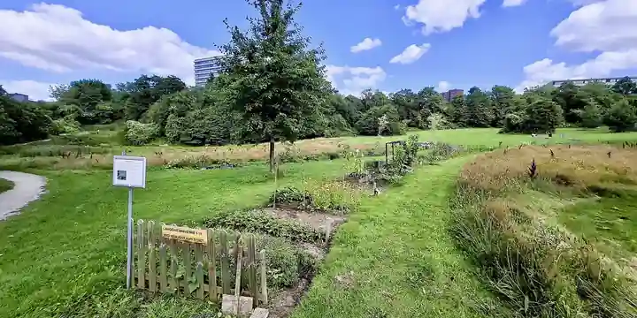
Parcelas de huerto en un parque público, camas pequeñas y variadas y un árbol joven detrás de una cerca baja de madera, con edificios de departamentos que se alzan tras los árboles bajo un cielo de verano luminoso
Foto: Ciara Ní Riain · CC BY-SA 4.0, vía Wikimedia Commons.
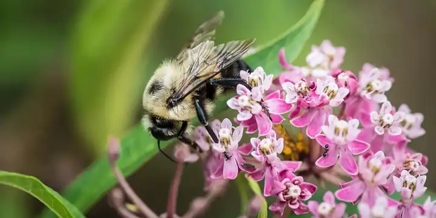
Un abejorro comiendo en un racimo denso de flores rosas de algodoncillo de pantano, con las alas plegadas hacia atrás y una hormiga pequeña entre las flores
Foto: U.S. Department of Agriculture Lance Cheung/Multimedia PhotoJournalist · Dominio público, vía Wikimedia Commons.
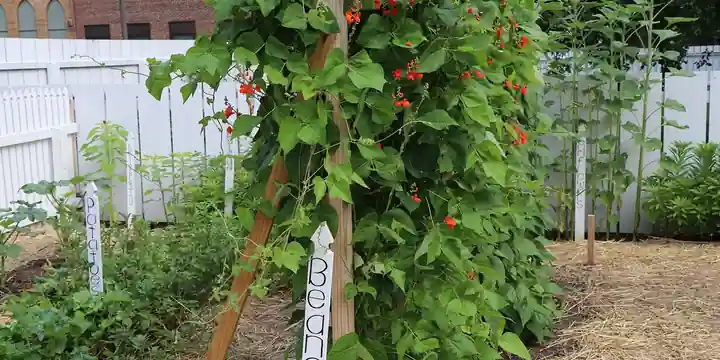
Un tipi de madera cubierto de frijoles ayocote en flor, con letreros de plantas escritos a mano y camas acolchadas con paja alrededor
Foto: NPS · Dominio público, vía Wikimedia Commons.
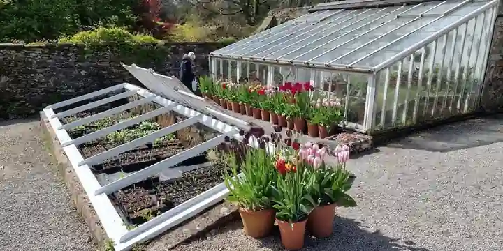
Una cama fría abierta llena de charolas de plántulas junto a un invernadero adosado y macetas de tulipanes, frente a un muro de piedra
Foto: Oliver Dixon · CC BY-SA 2.0, vía Wikimedia Commons.
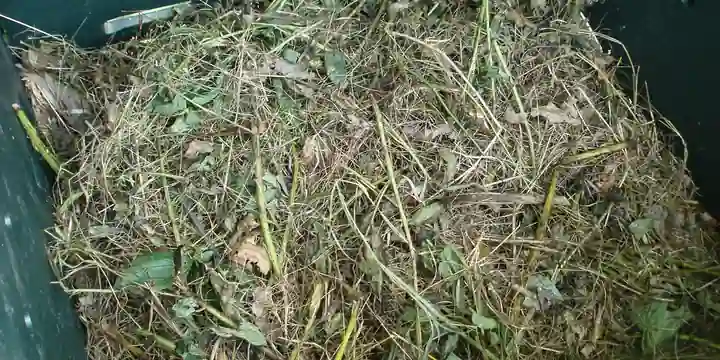
Restos verdes frescos del huerto (recortes de pasto, hojas y tallos podados) amontonados dentro de un compostero de plástico, vistos desde arriba
Foto: Ksd5 · CC0, vía Wikimedia Commons.
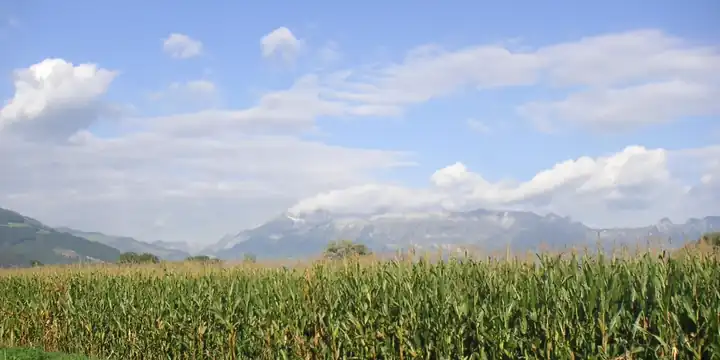
Un campo de maíz alto espigando junto a un camino rural, con crestas de montañas que se elevan detrás bajo un cielo de verano
Foto: Paranoid · Dominio público, vía Wikimedia Commons.
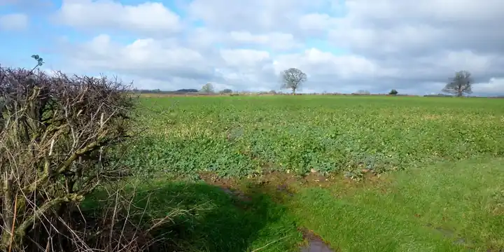
Un campo sembrado con un cultivo de cobertura verde de invierno, visto por encima de un seto de espino sin hojas bajo nubes en movimiento
Foto: Jonathan Billinger · CC BY-SA 2.0, vía Wikimedia Commons.
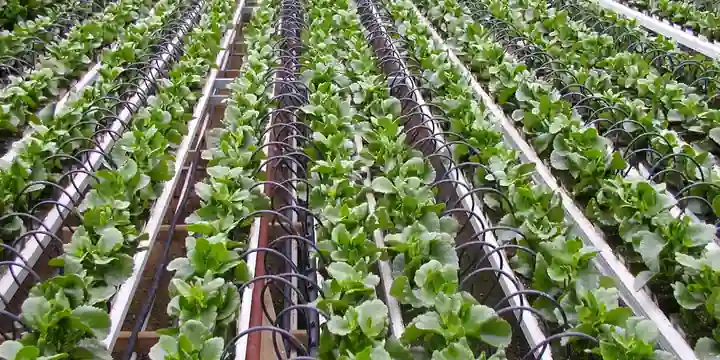
Hileras de plantas jóvenes en un vivero, cada hilera recorrida por una manguera negra de riego por goteo en bucles
Foto: Borisshin · CC BY-SA 4.0, vía Wikimedia Commons.

Floating seedbed rafts on a river seen from above, a farmer bending to tend one and a wooden boat moored alongside
Foto: Azimronnie · CC BY-SA 4.0, vía Wikimedia Commons.
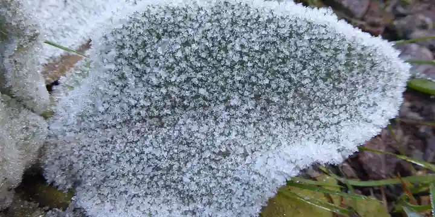
Una hoja verde y baja cubierta por completo de cristales blancos de escarcha, con pasto y grava escarchados alrededor
Foto: Syrio · CC BY-SA 4.0, vía Wikimedia Commons.

Camas elevadas grises con flores, frijoles y hierbas entre caminos de grava en un huerto comunitario, con un cobertizo rojo y una cerca pintada con un mural al fondo
Foto: Mikepascoe · CC0, vía Wikimedia Commons.
Un bieldo y una pala muy usada, apoyados uno junto a la otra sobre pasto salpicado de trébol
Foto: Erich Ferdinand · CC BY 2.0, vía Wikimedia Commons.

Herramientas de huerto viejas (un bieldo, rastrillos de abanico, una hoja de guadaña y azadones) colgadas en fila en una pared de madera desgastada
Foto: Dereckson · CC BY 4.0, vía Wikimedia Commons.

Un invernadero pequeño lleno de plantas de tomate y calabaza, con una guía que se sale por la ventila abierta del techo
Foto: W.carter · CC0, vía Wikimedia Commons.
Dos mujeres agachadas sembrando a mano en un campo de tierra roja, con un almiar de paja en el horizonte
Foto: Vraj Acharya, WELL Labs · CC BY-SA 4.0, vía Wikimedia Commons.

Cuatro canastas altas tejidas llenas de tomates rojos y anaranjados en un mercado, con costales de productos apilados detrás
Foto: Friday musa · CC BY-SA 4.0, vía Wikimedia Commons.
A monastery kitchen garden of edged vegetable and flower beds beneath a red fortress wall with a wooden-roofed tower
Foto: Perituss · CC0, vía Wikimedia Commons.

Una lechuga de hoja suelta ya crecida, con sus hojas rizadas cubiertas de gotas de lluvia y más hojas verdes apretadas a su alrededor
Foto: GT1976 · CC BY-SA 4.0, vía Wikimedia Commons.
Un campo de tagetes amarillos en plena floración bajo un grupo de cocoteros y un cielo azul despejado
Foto: Ezhuttukari · CC BY-SA 3.0, vía Wikimedia Commons.
Un huerto de camas acolchadas con paja y una hilera de puerros entre el pasto, con una paca de paja de repuesto esperando en la orilla
Foto: Final4one · CC BY-SA 3.0, vía Wikimedia Commons.
Un pimiento morrón rojo y brillante y uno verde madurando lado a lado entre hojas iluminadas por el sol
Foto: Rob Bertholf · CC BY 3.0, vía Wikimedia Commons.

Calabazas naranjas y amarillas esparcidas por un campo ya cosechado bajo un cielo cargado de tormenta, con maíz seco en pie en la orilla
Foto: Michael Barera · CC BY-SA 4.0, vía Wikimedia Commons.
Un montón de zanahorias recién arrancadas, todavía con sus hojas, y gente cosechando entre las hileras verdes detrás
Foto: Chad Skeers · CC BY 2.0, vía Wikimedia Commons.

Una plántula diminuta que asoma entre granos de grava gruesa, con el tallo todavía doblado por la semilla
Foto: Frederick Depuydt · CC BY-SA 4.0, vía Wikimedia Commons.
Una persona con sombrero de pescador que trabaja la tierra con un azadón dentro de una cama elevada con arcos, un letrero de puerro en el borde y edificios de la ciudad detrás
Foto: USDAgov · Dominio público, vía Wikimedia Commons.
A fenced garden of planted straw bales - lettuces, kohlrabi and squash growing from pockets of compost in the bales - on wood-chip paths
Foto: Colling-architektur · CC BY-SA 3.0, vía Wikimedia Commons.
Una carretilla gastada colmada de recortes de pasto frescos, con una podadora y alguien cruzando el césped detrás
Foto: Shixart1985 · CC BY 2.0, vía Wikimedia Commons.

Grosellas espinosas madurando, colgadas de la rama de un arbusto de huerto, con fruta translúcida de color amarillo verdoso entre las hojas
Foto: Pavel Leman · CC BY-SA 3.0, vía Wikimedia Commons.
Arbustos de grosella espinosa cargados de frutos rojos en un campo abierto bajo un cielo azul
Foto: Lis Burke · CC BY-SA 2.0, vía Wikimedia Commons.

Un montón de grosellas espinosas de color verde amarillento recién cosechadas, todavía con sus tallos y restos de flor
Foto: neurovelho · CC BY-SA 3.0, vía Wikimedia Commons.
Grosellas rojas y grosellas espinosas pálidas amontonadas en un plato bajo una luz de sol baja
Foto: dailyfood · CC BY 2.0, vía Wikimedia Commons.

Col rizada y repollos que llenan una hilera de bancales elevados de madera dentro de una cerca de troncos
Foto: Alabama Extension · CC0, vía Wikimedia Commons.
Una mata tupida de apio de corte junto a hileras de col de Saboya, a lo largo del muro de ladrillo de un huerto
Foto: cultivar413 from Fallbrook, California · CC BY 2.0, vía Wikimedia Commons.

Un borde ornamental de verduras con repollos morados, chiles, albahaca y hierbas, con una pared de girasoles detrás
Foto: cultivar413 · CC BY 2.0, vía Wikimedia Commons.
Plantas de papa creciendo en una jardinera de madera honda en un patio pavimentado, con macetas y un pequeño invernadero de plástico al lado
Foto: Claire Pearcy · CC BY-SA 4.0, vía Wikimedia Commons.

Una caja de cultivo con autorriego plantada con tomates, lechuga y hierbas al pie de unos escalones de madera
Foto: Bturner · CC BY-SA 3.0, vía Wikimedia Commons.
Un camino recto entre camas de hortalizas bordeadas de boj en un antiguo huerto amurallado, con un árbol joven en el centro
Foto: Christian David · CC BY-SA 4.0, vía Wikimedia Commons.
Un camino acolchado con corteza que pasa bajo un arco de hierro oxidado entre camas de huerto bordeadas de boj con verduras jóvenes
Foto: Billy McCrorie · CC BY-SA 2.0, vía Wikimedia Commons.

Obeliscos de madera pintada y macetas de barro a los lados de un camino acolchado entre camas bajas bordeadas de boj
Foto: Billy McCrorie · CC BY-SA 2.0, vía Wikimedia Commons.
Camas elevadas de hierbas con bordes de madera y etiquetas pintadas, salvia morada al frente y levístico detrás
Foto: Michael Garlick · CC BY-SA 2.0, vía Wikimedia Commons.

A parterre of herbs between clipped box hedges, twin ribbons of golden thyme beside chives in full purple flower
Foto: Michael Garlick · CC BY-SA 2.0, vía Wikimedia Commons.

Raised herb and vegetable beds along a gravel path in a brick-walled garden, visitors among the borders
Foto: Michael Garlick · CC BY-SA 2.0, vía Wikimedia Commons.

An ornate lead rainwater cistern dated 1733 collecting from a downpipe against a brick and timber house, ferns at its foot
Foto: Michael Garlick · CC BY-SA 2.0, vía Wikimedia Commons.
A wooden barrel water butt by the greenhouse door of a hedged kitchen garden
Foto: Rowan Adams · CC BY-SA 4.0, vía Wikimedia Commons.

Plántulas de pepino con sus primeras hojas apiñadas en una charola de germinación, con tierra abierta detrás
Foto: Pascal Kings · CC BY 4.0, vía Wikimedia Commons.

Plántulas jóvenes con sus primeras hojas verdaderas saliendo de las celdas hondas de una charola de germinación
Foto: Pascal Kings · CC BY 4.0, vía Wikimedia Commons.
Charolas de germinación con plántulas jóvenes vistas desde arriba, una plántula por celda
Foto: Pascal Kings · CC BY 4.0, vía Wikimedia Commons.
Una guía de calabaza que se extiende por toda su cama elevada y trepa la cerca del huerto detrás, con hojas que dan sombra a toda la esquina
Foto: Vdubs1 · CC BY-SA 4.0, vía Wikimedia Commons.

Flores amarillas de calabaza entre tallos de hojas espinosos sobre un acolchado de paja
Foto: Mary O'Neill · Dominio público, vía Wikimedia Commons.

Una planta de calabacita pegada al suelo, con una flor naranja abierta y un fruto oscuro engordando bajo los tallos de las hojas
Foto: USDA NRCS Texas · Dominio público, vía Wikimedia Commons.
Parcelas de huerto en reposo bajo un cielo gris de invierno, con carretillas y composteras de palés alineadas junto a un seto de haya roja
Foto: John Sutton · CC BY-SA 2.0, vía Wikimedia Commons.

A scarecrow keeping watch over winter allotment beds of young greens and leeks, a red shed behind
Foto: Mary Gracie · CC BY-SA 2.0, vía Wikimedia Commons.

Parcelas de huerto en invierno bajo un sol bajo, un invernadero pequeño y un barril azul de agua entre arbustos frutales sin hojas, con casas de ladrillo detrás
Foto: Sebastian Ballard · CC BY-SA 2.0, vía Wikimedia Commons.

Una mano con guante coloca una planta joven de tomate en un hoyo en tierra de huerto seca y suelta
Foto: Shixart1985 · CC BY 2.0, vía Wikimedia Commons.

Camas elevadas de madera con chícharos, cebollas, maíz y calabazas junto a un camino de pasto, con varas para frijol y un invernadero detrás
Foto: Kolforn · CC BY-SA 4.0, vía Wikimedia Commons.
Dos charolas de germinación recién sembradas con tomate y chile, sobre un escritorio bajo techo
Foto: Furkan Akkurt · CC BY-SA 4.0, vía Wikimedia Commons.
Una flor blanca de frambuesa entre las hojas de la caña
Foto: Inhemska trädgården · CC BY-SA 4.0, vía Wikimedia Commons.
Flores amarillas pequeñas en una tomatera
Foto: Felagund · CC BY-SA 3.0, vía Wikimedia Commons.
Mazorcas tiernas con sus barbas en la caña del maíz
Foto: JFVelasquez Floro · CC0, vía Wikimedia Commons.
Una flor blanca en una planta de pimiento
Foto: Bst9jkj · CC0, vía Wikimedia Commons.
Un montón de papas recién cosechadas al borde de un campo
Foto: Donald Trung Quoc Don · CC BY-SA 4.0, vía Wikimedia Commons.

Una grosella espinosa madurando en el arbusto entre sus hojas lobuladas
Foto: Dirk Ingo Franke · CC BY-SA 3.0, vía Wikimedia Commons.
Hileras de coles jóvenes que llenan un campo
Foto: Philip Halling · CC BY-SA 2.0, vía Wikimedia Commons.

Un bulbo de cebolla engordando a ras del suelo bajo sus hojas verdes
Foto: Kolforn · CC BY-SA 4.0, vía Wikimedia Commons.
Una planta de frijol enano en flor, con flores moradas pequeñas
Foto: Kolforn · CC BY-SA 4.0, vía Wikimedia Commons.
Una mata de pepino atada a su soporte, con una flor amarilla
Foto: Versions111 · CC BY 4.0, vía Wikimedia Commons.

Vainas de haba abiertas que muestran los granos
Foto: Kolforn · CC BY-SA 4.0, vía Wikimedia Commons.

Vides guiadas en alambres a lo largo de hileras de viñedo
Foto: MendozaGuide · CC BY 4.0, vía Wikimedia Commons.
Flores blancas de chícharo entre los zarcillos de las matas
Foto: M J Richardson · CC BY-SA 2.0, vía Wikimedia Commons.

Un capullo de flor de ruibarbo abriéndose en su tallo
Foto: Olivier · CC BY 2.0, vía Wikimedia Commons.

Una flor amarilla de calabacita abierta sobre el fruto y las hojas
Foto: net_efekt from Oxford, UK · CC BY 2.0, vía Wikimedia Commons.
Las dos primeras hojas de una plántula de lechuga, aún con la cáscara de la semilla
Foto: Krzysztof Ziarnek, Kenraiz · CC BY-SA 4.0, vía Wikimedia Commons.
Maíz que sale de un montículo con acolchado, con frijol y calabaza al pie
Foto: Spencer-Nägy · CC BY-SA 4.0, vía Wikimedia Commons.
Una milpa en Oaxaca: el maíz se alza sobre la calabaza y el frijol
Foto: Paul Rogé · CC BY 4.0, vía Wikimedia Commons.
Un hombre recoge moras de un seto alto de zarzas
Foto: Acabashi · CC BY-SA 4.0, vía Wikimedia Commons.
Racimos de uvas que cuelgan de parras guiadas sobre una pérgola
Foto: Chris Booth · CC BY-SA 2.0, vía Wikimedia Commons.


Un tractor tumba en primavera un abono verde de centeno y veza
Foto: Mr.1032 · CC BY-SA 4.0, vía Wikimedia Commons.

Patos que nadan entre plantas jóvenes de arroz en un arrozal inundado
Foto: bertconcepts · CC BY 2.0, vía Wikimedia Commons.

Hortalizas que crecen en una chinampa junto a un canal en Tláhuac, Ciudad de México
Foto: AlejandroLinaresGarcia · CC BY-SA 3.0, vía Wikimedia Commons.
Una franja de manzanilla y aciano en el borde de un campo
Foto: Sebastian Wallroth · Dominio público, vía Wikimedia Commons.
A raised bed planted with neat rows of lettuces, salad leaves and radishes in rich dark soil
Foto: Acabashi · CC BY-SA 4.0, vía Wikimedia Commons.
An established Three Sisters bed - corn tasseling with squash flowering and sprawling below, inside a fenced garden
Foto: Myotus · CC BY-SA 4.0, vía Wikimedia Commons.
.jpg){kind=link}


.JPG){kind=link}

.jpg){kind=link}
.JPG){kind=link}


.jpg){kind=link}


_Lactuca_sativa_(garden_lettuce)_at_Bichlh%C3%A4usl_in_Frankenfels,_Austria.jpg){kind=link}


.jpeg){kind=link}
.jpg){kind=link}
.jpg){kind=link}

.jpg){kind=link}


.jpg){kind=link}
.jpg){kind=link}
.jpg){kind=link}


.jpg){kind=link}


.jpg){kind=link}
.jpg){kind=link}


.JPG){kind=link}


_03.jpg){kind=link}


,_Trimingham,_Norfolk.JPG){kind=link}